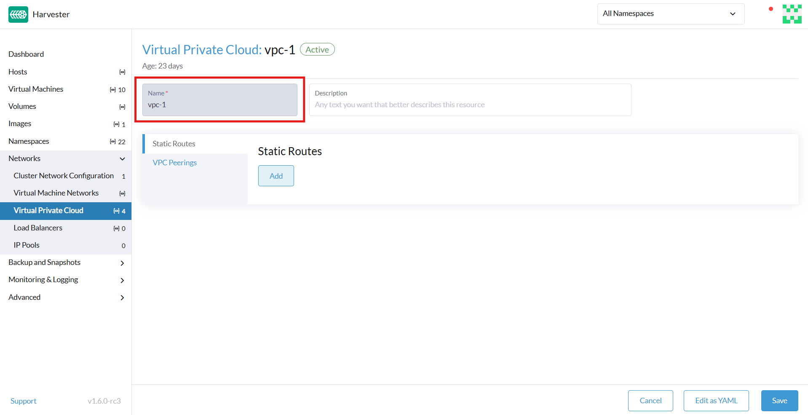

Nuvem privada virtual (VPC)
|
Todos os recursos que utilizam Kube-OVN são considerados experimentais. Para mais informações sobre recursos experimentais, veja Rótulos de Recursos. |
Uma nuvem privada virtual (VPC) é uma rede logicamente isolada que fornece controle total sobre endereços IP, sub-redes, tabelas de rotas, firewalls e gateways dentro de uma infraestrutura de nuvem. As VPCs permitem a implantação segura e escalável de recursos virtualizados, como computação, armazenamento e serviços de contêiner.
A tabela a seguir descreve os principais componentes de uma VPC:
| Componente | Descrição |
|---|---|
VPC |
Espaço de rede de nível superior com um intervalo de CIDR de IP definido pelo usuário |
sub-rede |
Subdivisão do espaço de IP da VPC; pode ser pública ou privada |
tabela de rotas |
Define as regras de roteamento de tráfego dentro e fora da VPC |
gateway da internet |
Habilita o acesso à internet para sub-redes públicas |
gateway NAT |
Permite que sub-redes privadas acessem a internet (apenas saída) |
grupo de segurança |
Firewall virtual que controla o tráfego de entrada e saída por instância |
peering de VPC |
Conexões de peering ou híbridas opcionais entre diferentes VPCs ou redes no local |
SUSE Virtualization e arquitetura de integração Kube-OVN
O diagrama a seguir ilustra como VPCs, sub-redes, redes sobrepostas e máquinas virtuais estão logicamente conectadas em SUSE Virtualization com Kube-OVN. Esta arquitetura inclui sub-redes públicas e privadas, permitindo a separação do tráfego voltado para a internet dos recursos internos. Além disso, esta arquitetura possibilita estruturas de rede L3 e L2 escaláveis e isoladas em todo o cluster.
[ VPC: vpc-1 ]
│
┌─────────────────────┴─────────────────────┐
│ │
[ Subnet: vswitch1-subnet ] [ Subnet: vswitch2-subnet ]
CIDR: 172.20.10.0/24 CIDR: 172.20.20.0/24
Gateway: 172.20.10.1 Gateway: 172.20.20.1
│ │
[ Overlay Network: vswitch1 ] [ Overlay Network: vswitch2 ]
│ │
┌────────┴────────┐ ┌────────┴────────┐
│ │ │ │
[VM: vm1-vswitch1] [VM: vm2-vswitch1] [VM: vm1-vswitch2]
IP: 172.20.10.X IP: 172.20.10.Y IP: 172.20.20.Z
| Componente | plataforma | Responsabilidade Lógica |
|---|---|---|
Kube-OVN |
Domínio L3 de nível superior, gerencia agrupamentos de sub-redes |
|
Kube-OVN |
Atribuição de CIDR, roteamento, gateway, regras de firewall |
|
SUSE Virtualization |
Switch virtual L2 (ponte OVS), mapeado para a sub-rede |
|
SUSE Virtualization |
Executa cargas de trabalho computacionais, conectado à rede sobreposta |
Esta arquitetura possui as seguintes características principais:
-
Kube-OVN cria a VPC e suas sub-redes.
Cada sub-rede inclui um CIDR e um IP de gateway, e se vincula a uma rede sobreposta (como provedor). Kube-OVN impõe um mapeamento um-para-um entre a sub-rede e a rede sobreposta para evitar roteamento ambíguo, colisões de tráfego e problemas de isolamento.
-
SUSE Virtualization define as redes sobrepostas.
Cada rede sobreposta é considerada um provedor no Kube-OVN. Quando você cria uma sub-rede na interface do SUSE Virtualization, pode selecionar essas redes sobrepostas na lista Provedor (tipo:
OverlayNetwork) na tela Sub-rede:Criar. -
SUSE Virtualization provisiona máquinas virtuais que estão conectadas a uma rede sobreposta.
Cada máquina virtual utiliza o Kube-OVN IPAM para solicitar um endereço IP após a inicialização. A máquina virtual recebe seu endereço IP, gateway e informações de roteamento da sub-rede associada.
-
Kube-OVN lida com toda a lógica L3 (roteamento, NAT, emparelhamento de VPC e isolamento).
SUSE Virtualization foca puramente em computação e anexação de rede. A aplicação de política de rede, sub-redes privadas e saída NAT são gerenciadas pelo Kube-OVN.
Esta arquitetura oferece os seguintes benefícios:
-
Clara separação de responsabilidades: SUSE Virtualization lida com virtualização; Kube-OVN lida com SDN
-
Escalabilidade: Novas VPCs, sub-redes e peering de VPC não requerem mudanças no SUSE Virtualization kernel
-
Rede nativa do Kubernetes: Kube-OVN se integra de forma estreita com o Kubernetes, suportando CRDs, políticas, etc.
-
Isolamento e observabilidade: Controle centralizado sobre IPs, ACLs e roteamento através do Kube-OVN
Configuração de VPC e sub-rede
Configurações de VPC
Em SUSE Virtualization, uma nuvem privada virtual (VPC) é um contêiner lógico de rede que ajuda a gerenciar e isolar sub-redes e tráfego. Ela define roteamento, NAT e segmentação de rede.
SUSE Virtualization fornece uma VPC padrão chamada ovn-cluster, e duas sub-redes associadas chamadas ovn-default e join para operações internas do Kube-OVN. Você pode criar VPCs adicionais clicando em Criar na tela Nuvem Privada Virtual.

Ao criar VPCs personalizadas, você deve configurar as definições relacionadas às rotas definidas para direcionar o tráfego e conexões que permitem a comunicação entre as VPCs locais e remotas. A tabela a seguir descreve as configurações na tela de detalhes da Nuvem Privada Virtual:
| Seção | Configuração | Descrição |
|---|---|---|
Informações gerais |
Nome |
Nome da VPC |
Informações gerais |
Descrição |
Descrição da VPC |
Rotas Estáticas aba |
CIDR |
Faixa de endereço IP de destino para a rota (por exemplo, |
Rotas Estáticas aba |
IP do Próximo Salto |
Endereço IP para o qual o tráfego do CIDR deve ser encaminhado (por exemplo, o endereço IP do gateway ou do roteador) |
Conexões de VPC aba |
IP de Conexão Local |
Endereço IP na VPC local a ser usado para a conexão de peering |
Conexões de VPC aba |
VPC Remota |
VPC remota alvo que está emparelhada com a VPC local |

Configurações de sub-rede
Cada sub-rede define um bloco CIDR e um gateway, e está mapeada para uma SUSE Virtualization rede sobreposta (switch virtual). Inclui também controles para NAT e regras de acesso.
Ao criar sub-redes, você deve configurar as definições que são relevantes para o seu caso de uso. Na maioria dos casos, você pode começar configurando apenas o Bloco CIDR, Gateway e Provedor. A tabela a seguir descreve as configurações na tela de detalhes da sub-rede:
| Seção | Configuração | Descrição |
|---|---|---|
Informações gerais |
Nome |
Nome da sub-rede |
Informações gerais |
Descrição |
Descrição da sub-rede |
Básico |
CIDR Block |
Faixa de endereços IP atribuída à sub-rede (por exemplo, |
Guia Básica |
Protocolo |
Versão do protocolo de rede utilizada para esta sub-rede (IPv4 ou IPv6) |
Guia Básica |
Fornecedor |
Rede sobreposta (switch virtual) à qual a sub-rede está vinculada |
Guia Básica |
Nuvem Privada |
Nuvem privada à qual a sub-rede pertence |
Guia Básica |
Gateway |
Endereço IP que atua como o gateway padrão para máquinas virtuais na sub-rede |
Guia Básica |
Sub-rede Privada |
Configuração que restringe o acesso à sub-rede e garante isolamento de rede |
Guia Básica |
Permitir Sub-redes |
CIDRs que têm permissão para acessar a sub-rede quando Sub-rede Privada está habilitada |
Guia Básica |
Excluir IPs |
Lista de endereços IP que não devem ser atribuídos automaticamente a máquinas virtuais |

Cada sub-rede criada possui uma configuração chamada <<`natOutgoing` setting,natOutgoing>>, que habilita a tradução de endereço de rede (NAT) para o tráfego que sai da sub-rede e vai para destinos fora da VPC. Essa configuração fica desabilitada por padrão. Para habilitá-la, você deve editar a configuração YAML da sub-rede e definir o valor como natOutgoing: true.

Por padrão, sub-redes em diferentes VPCs não conseguem se comunicar diretamente. Para habilitar uma comunicação segura e controlada entre elas, você deve estabelecer uma conexão de peering de VPC. Sem isso, o tráfego de sub-rede em cada VPC permanece completamente isolado.
|
As conexões de peering de VPC só podem ser estabelecidas entre VPCs personalizadas. |

Criando uma VPC
Realize os seguintes passos para criar e configurar uma VPC.
-
Ative kubeovn-operator.
O complemento kubeovn-operator implanta o Kube-OVN no cluster SUSE Virtualization.

-
Você deve criar uma rede sobreposta separada para cada sub-rede que planeja criar.
-
Crie uma VPC.
-
Vá para Redes → Nuvem Privada Virtual, e então clique em Criar.
-
Na tela Nuvem Privada Virtual:Criar, especifique um nome único para a VPC.
-
Clique em Criar.
-
-
Crie sub-redes.
-
Vá para Redes → Nuvem Privada Virtual.
-
Localize a VPC que você criou e clique em Criar Sub-rede.
-
Na tela Sub-rede:Criar, configure as configurações que são relevantes para o seu ambiente.
Você deve vincular cada sub-rede a uma rede sobreposta dedicada. No campo Provedor, a interface SUSE Virtualization só mostra redes sobrepostas que não estão vinculadas a outras sub-redes, aplicando automaticamente o mapeamento um a um.
-
Clique em Editar como YAML.
-
Sob
spec, adicioneenableDHCP: true.Isso garante que as máquinas virtuais conectadas à sub-rede possam obter as opções corretas de rota padrão.
-
Clique em Criar.
-
-
Crie máquinas virtuais.
-
Configure as configurações que são relevantes para cada máquina virtual.
Na aba Redes, você deve selecionar a rede overlay correta no campo Rede.
-
Clique em Criar.
A máquina virtual obtém seu endereço IP da sub-rede à qual está conectada.
-
Selecione ⋮ → Editar YAML.
-
Altere o valor de
spec.domain.devices.interface.binding.nameparamanagedtap.Isso garante que a máquina virtual obtenha as opções corretas de DHCP da sub-rede em vez de usar o servidor DHCP padrão do KubeVirt.
Se você não realizar esta etapa, a máquina virtual não terá uma rota padrão. Até que a rota padrão esteja devidamente configurada no sistema operacional convidado, as tentativas de acessar destinos externos e máquinas virtuais em sub-redes diferentes falharão.
Para mais informações, veja Limitações da rede sobreposta.
-
Reinicie cada máquina virtual.
-
Exemplo de configuração e verificação de VPC
-
Criar redes sobrepostas com as seguintes configurações:
-
Nome:
vswitch1evswitch2 -
Tipo:
OverlayNetwork
-
-
Crie uma VPC chamada
vpc-1. -
Crie duas sub-redes em
vpc-1com as seguintes configurações:Nome CIDR Fornecedor IP do gateway vswitch1-subnet172.20.10.0/24default/vswitch1172.20.10.1vswitch2-subnet172.20.20.0/24default/vswitch2172.20.20.1 -
Crie três máquinas virtuais com as seguintes configurações:
-
Nome:
vm1-vswitch1,vm2-vswitch1evm1-vswitch2 -
aba Configurações Básicas
-
CPU:
1 -
Memória:
2
-
-
aba Volumes
-
Volume de Imagem: Uma imagem de nuvem (por exemplo,
noble-server-cloudimg-amd64)
-
-
aba Redes
-
Rede:
default/vswitch1
-
-
aba Opções Avançadas
users: ` `- name: ubuntu ` `groups: [ sudo ] ` `shell: /bin/bash ` `sudo: ALL=(ALL) NOPASSWD:ALL ` `lock\_passwd: false
Uma vez que as máquinas virtuais comecem a rodar, o nó exibe o servidor NTP
0.suse.pool.ntp.orge o endereço IP.
-
-
Abra os consoles seriais de
vm1-vswitch1evm1-vswitch2, e então adicione uma rota padrão em cada um (se não existir) usando os seguintes comandos:-
vm1-vswitch1(172.20.10.6):#sudo ip route add default via 172.20.10.1 dev enp1s0
-
vm1-vswitch2(172.20.20.3):#sudo ip route add default via 172.20.20.1 dev enp1s0
Se uma máquina virtual quiser enviar tráfego para uma rede desconhecida (não na sub-rede local), o tráfego deve ser encaminhado para o IP do gateway especificado, configurado para a sub-rede conectada, usando a interface de rede especificada. Neste exemplo,
vm1-vswitch1deve encaminhar o tráfego via172.20.10.1, enquantovm1-vswitch2deve encaminhar o tráfego via172.20.20.1. Ambas as máquinas virtuais usam a interface de redeenp1s0.
-
-
Verifique a conectividade usando o comando
ping.-
Use
vm1-vswitch1(172.20.10.6) para pingarvm1-vswitch2(172.20.20.3). -
Use
vm1-vswitch2(172.20.20.3) para pingarvm1-vswitch1(172.20.10.6).Como
vm1-vswitch1evm1-vswitch2estão na mesma sub-rede, eles podem se comunicar entre si sem nenhuma configuração de rota padrão.Se nenhuma rota padrão existir na máquina virtual antes de você executar o comando ping, o console exibirá a mensagem
ping: connect: A rede está inacessível.
-
Configuração de sub-rede privada
Quando a configuração de Sub-rede Privada está habilitada em uma sub-rede, ela não pode se comunicar com outras sub-redes na mesma VPC por padrão. O tráfego entre sub-redes é permitido apenas se você adicionar os blocos CIDR das outras sub-redes à lista de Permitir Sub-redes da sub-rede privada.
A configuração de Sub-rede Privada oferece os seguintes benefícios:
-
Segmentação de rede detalhada (micro-segmentação)
-
Isolamento de rede mais forte dentro da VPC e redução da superfície de ataque potencial
-
Prevenção de acesso não autorizado a recursos sensíveis ou críticos dentro da VPC
-
Comunicação controlada e seletiva entre sub-redes via lista de Permitir Sub-redes
Verificação de sub-rede privada de exemplo
-
Vá para Redes → Nuvem Privada Virtual.
-
Localize
vswitch1-subnet, e então selecione ⋮ → Editar Config. -
Habilite a configuração de Sub-rede Privada.
-
Abra o console serial de
vm1-vswitch1(172.20.10.6), e então pinguevm1-vswitch2(172.20.20.3).A tentativa de ping falha porque
vm1-vswitch1está isolado. Habilitar a configuração de Sub-rede Privada emvswitch1-subnetproíbevm1-vswitch1de se comunicar com máquinas virtuais em outras sub-redes. -
Volte para a tela de nuvem privada, localize
vswitch1-subnet, e então selecione ⋮ → Editar Configuração. -
Adicione
172.20.20.0/24ao campo Permitir Sub-redes. -
Abra o console serial de
vm1-vswitch1(172.20.10.6), e então faça ping emvm1-vswitch2(172.20.20.3).A tentativa de ping é bem-sucedida.
Configuração natOutgoing
A configuração natOutgoing habilita a tradução de endereço de rede (NAT) para o tráfego que sai da sub-rede e vai para destinos fora da VPC. Essa configuração fica desabilitada por padrão. Para habilitá-la, você deve editar a configuração YAML da sub-rede e definir o valor como natOutgoing: true.
Exemplo de configuração e verificação natOutgoing
-
Criar uma rede sobreposta com as seguintes configurações:
-
Nome:
vswitch-external -
Tipo:
OverlayNetwork
-
-
Na nuvem privada
ovn-cluster, crie uma sub-rede com as seguintes configurações:-
Nome:
external-subnet -
Bloco CIDR:
172.20.30.0/24 -
Provedor:
default/vswitch-external -
IP do gateway:
172.20.30.1
-
-
Crie uma máquina virtual com as seguintes configurações:
-
Nome:
vm-external -
aba Configurações Básicas
-
CPU:
1 -
Memória:
2
-
-
aba Volumes
-
Volume de Imagem: Uma imagem de nuvem (por exemplo,
noble-server-cloudimg-amd64)
-
-
aba Redes
-
Rede:
default/vswitch-external
-
-
aba Opções Avançadas
users: ` `- name: ubuntu ` `groups: [ sudo ] ` `shell: /bin/bash ` `sudo: ALL=(ALL) NOPASSWD:ALL ` `lock\_passwd: false
-
-
Abra o console serial de
vm-external(172.20.30.2), e então faça ping em8.8.8.8.O console exibe a mensagem
ping: connect: A rede está inacessível. -
Adicione uma rota padrão usando o seguinte comando:
#sudo ip route add default via 172.20.30.1 dev enp1s0
Novamente, a tentativa de ping falha.
-
Vá para a tela nuvem privada.
-
Localize
external-subnet, e então selecione ⋮ → Editar Configuração. -
Clique em Editar como YAML.
-
Localize o campo
natOutgoing, e então mude o valor paratrue. -
Clique em Salvar.
-
Abra o console serial de
vm-external(172.20.30.2), e então faça ping em8.8.8.8.A tentativa de ping foi bem-sucedida.
Emparelhamento de VPC
O emparelhamento de VPC é uma conexão de rede que permite que máquinas virtuais em diferentes VPCs se comuniquem usando endereços IP privados.
Cada VPC é um namespace de rede separado com seu próprio bloco CIDR, tabela de roteamento e limite de isolamento. Sem o emparelhamento de VPC, as máquinas virtuais estão isoladas mesmo quando estão hospedadas dentro do mesmo SUSE Virtualization cluster. Uma vez que uma conexão de emparelhamento é estabelecida, as regras de roteamento são atualizadas automaticamente para permitir que as máquinas virtuais se comuniquem de forma privada.
O emparelhamento de VPC oferece as seguintes vantagens:
-
As VPCs permanecem logicamente e administrativamente isoladas. Isso é ideal para configurações multi-inquilino que requerem forte isolamento de rede com conectividade opcional. Você pode organizar cargas de trabalho por equipe, função ou ambiente (por exemplo, desenvolvimento vs. produção).
-
O tráfego entre VPCs não atravessa a internet pública, reduzindo a exposição. Você também pode usar tabelas de roteamento e regras de firewall para controlar rigorosamente o acesso à rede.
-
Manter o tráfego dentro da rede interna da nuvem não apenas melhora o desempenho, mas também reduz custos, proporcionando uma vantagem significativa em relação ao uso da internet pública ou VPNs.
O diagrama a seguir mostra como VPCs e sub-redes no Kube-OVN se mapeiam para redes sobrepostas e máquinas virtuais em SUSE Virtualization. Esta arquitetura permite que você crie estruturas de rede L3 e L2 escaláveis e isoladas em todo o cluster.
┌───────────────────────────────────────────┐
│ Kube-OVN │
│ (SDN Controller / IPAM) │
└───────────────────────────────────────────┘
│
┌──────────────────────────────────────────────────────┴──────────────────────────────────────────────────────────┐
│ │ │
┌──────────────┐ ┌──────────────┐ ┌──────────────┐
│ VPC: vpc-1 │ │VPC: vpcpeer-1│ ◀────────── peering ──────────▶ │VPC: vpcpeer-2│
└──────────────┘ └──────────────┘ └──────────────┘
│ │ │
▼ ▼ ▼
┌──────────────────────────────┐ ┌──────────────────────────────┐ ┌──────────────────────────────┐
│ Subnet: vswitch1-subnet │ │ Subnet: vswitch3-subnet │ │ Subnet: vswitch4-subnet │
│ CIDR: 172.20.10.0/24 │ │ CIDR: 10.0.0.0/24 │ │ CIDR: 20.0.0.0/24 │
│ Gateway: 172.20.10.1 │ │ Gateway: 10.0.0.1 │ │ Gateway: 20.0.0.1 │
└──────────────────────────────┘ └──────────────────────────────┘ └──────────────────────────────┘
│ (1:1 mapping - Provider binding) │ │
▼ ▼ ▼
┌──────────────────────────────┐ ┌──────────────────────────────┐ ┌──────────────────────────────┐
│ Overlay: vswitch1 │ │ Overlay: vswitch3 │ │ Overlay: vswitch4 │
│ Type: OverlayNetwork │ │ Type: OverlayNetwork │ │ Type: OverlayNetwork │
└──────────────────────────────┘ └──────────────────────────────┘ └──────────────────────────────┘
│ │ │
▼ ▼ ▼
┌──────────────────────┐ ┌──────────────────────┐ ┌──────────────────────┐
│ VM: vm1-vswitch1 │ │ VM: vm1-vswitch3 │ │ VM: vm1-vswitch4 │
│ IP: 172.20.10.5 │ ◀ ──────── X ──────── ▶ │ IP: 10.0.0.2 │ ◀── Connected via ──▶ │ IP: 20.0.0.2 │
└──────────────────────┘ └──────────────────────┘ vswitch (overlay) └──────────────────────┘
▲
│
VM launched and managed by {harvester-product-name}
Exemplos de configuração de emparelhamento de VPC
-
Exemplo 1: Comunicação bem-sucedida entre VPCs
Nome da VPC VPC CIDR Sub-rede Rota Estática vpcpeer-110.0.0.0/1610.0.0.0/2420.0.0.0/16 → 169.254.0.2vpcpeer-220.0.0.0/1620.0.0.0/2410.0.0.0/16 → 169.254.0.1Como ambas as sub-redes estão dentro de seus respectivos CIDRs de VPC, o roteamento funciona corretamente e a comunicação entre VPCs é bem-sucedida.
-
Exemplo 2: Comunicação entre VPCs sem sucesso devido a um problema de configuração de roteamento
Nome da VPC VPC CIDR Sub-rede Rota Estática vpcpeer-110.0.0.0/1610.1.0.0/2420.0.0.0/16 → 169.254.0.2vpcpeer-220.0.0.0/1620.1.0.0/2410.0.0.0/16 → 169.254.0.1Os endereços IP da sub-rede de destino (por exemplo,
10.1.0.2e20.1.0.2) não estão cobertos pela configuração de roteamento, causando falha na comunicação entre VPCs.
|
Verifique o seguinte:
Se uma sub-rede usar um intervalo específico que não está coberto pelo CIDR da VPC, a rota estática associada não pode alcançar essa sub-rede. |
Para mais informações sobre os pré-requisitos e configuração de emparelhamento de VPC, consulte VPC Peering na documentação do Kube-OVN.
Configuração e verificação de emparelhamento de VPC de exemplo
-
Criar duas redes overlay com as seguintes configurações:
-
Nome:
vswitch3evswitch4 -
Tipo:
OverlayNetwork
-
-
Criar duas VPCs chamadas
vpcpeer-1evpcpeer-2.SUSE Virtualization cria dois espaços de rede isolados que estão prontos para a criação de sub-redes.
-
Crie uma sub-rede em cada VPC com as seguintes configurações:
Nome da VPC Nome da Sub-rede Bloco CIDR Fornecedor IP do Gateway vpcpeer-1subnet110.0.0.0/24default/vswitch310.0.0.1vpcpeer-2subnet220.0.0.0/24default/vswitch420.0.0.1 -
Edite a configuração de ambas as VPCs.
-
vpcpeer-1Seção Configuração Valor Aba Emparelhamento de VPC
IP de Conexão Local
169.254.0.1/30Aba Emparelhamento de VPC
VPC Remota
vpcpeer-2Aba Rotas Estáticas
CIDR
20.0.0.0/16Aba Rotas Estáticas
IP do Próximo Salto
169.254.0.2 -
vpcpeer-2Seção Configuração Valor Aba Emparelhamento de VPC
IP de Conexão Local
169.254.0.2/30Aba Emparelhamento de VPC
VPC Remota
vpcpeer-1Aba Rotas Estáticas
CIDR
10.0.0.0/16Aba Rotas Estáticas
IP do Próximo Salto
169.254.0.1
-
-
Crie máquinas virtuais.
Um erro
Não agendávelgeralmente indica memória insuficiente. Pare outras máquinas virtuais antes de tentar criar novas. -
Abra os consoles seriais de
vm1-vpcpeer1evm1-vpcpeer2, e então adicione uma rota padrão em cada um (se não existir) usando os seguintes comandos:-
vm1-vpcpeer1(10.0.0.2)#sudo ip route add default via 10.0.0.1 dev enp1s0
-
vm1-vpcpeer2(20.0.0.2)#sudo ip route add default via 20.0.0.1 dev enp1s0
-
-
Teste a comunicação entre VPCs usando o comando
ping.-
Use
vm1-vpcpeer1(10.0.0.2) para pingarvm1-vpcpeer2(20.0.0.2). -
Use
vm1-vpcpeer2(20.0.0.2) para pingarvm1-vpcpeer1(10.0.0.2).A comunicação entre máquinas virtuais em diferentes VPCs depende de rotas estáticas que definem como o tráfego é encaminhado para a VPC remota. Para que essas rotas funcionem corretamente, o CIDR de destino da rota estática deve estar dentro do intervalo CIDR principal da VPC remota.
-
Configuração de IP e CIDR de Conexão Local
| Pergunta | Resposta |
|---|---|
O valor de IP de Conexão Local é um bloco CIDR? |
Sim (por exemplo, |
Qual é o tamanho de sub-rede recomendado? |
|
Endereços privados (RFC 1918) podem ser usados para links de emparelhamento? |
Não recomendado |
Por que usar |
Link-local, seguro, não roteável pela internet, amplamente utilizado |
-
Pergunta: O valor de IP de Conexão Local é um bloco CIDR?
Resposta: Sim. Você deve especificar um bloco CIDR (por exemplo,
169.254.0.1/30) em vez de um único endereço IP. O CIDR define uma rede ponto a ponto onde um endereço IP é usado pela VPC local e o outro é usado pela VPC remota.Exemplo: bloco
/30(169.254.0.0/30)Endereço IP de finalidade 169.254.0.0
Endereço de rede
169.254.0.1
Usado pela VPC A
169.254.0.2
Usado pela VPC B
169.254.0.3
Broadcast (opcional)
-
Pergunta: Qual é o tamanho de sub-rede recomendado?
Resposta:
/30fornece exatamente dois endereços IP utilizáveis, o que atende ao requisito de emparelhamento de VPC ponto a ponto. Usar blocos maiores (por exemplo,/28e/29) não é necessário e pode até ser considerado um desperdício.CIDR IPs utilizáveis Recomendado? /302
Sim
/296
Não
/2814
Não
-
Pergunta: Por que usar
169.254.x.x/30em vez de endereços privados?Resposta:
169.254.0.0/16é não parte do espaço de endereços privados RFC 1918 (10.0.0.0/8,172.16.0.0/12e192.168.0.0/16). A RFC 3927 define169.254.0.0/16como o espaço de endereços link-local, que é destinado à comunicação interna, configuração automática de IP e roteamento ponto a ponto.169.254.x.x/30tem as seguintes vantagens:-
Não roteável para a internet pública
-
Seguro para uso interno
-
Comumente usado por plataformas de nuvem (incluindo AWS e Alibaba Cloud) para fins de rede interna, como emparelhamento de VPC e acesso a metadados.
-